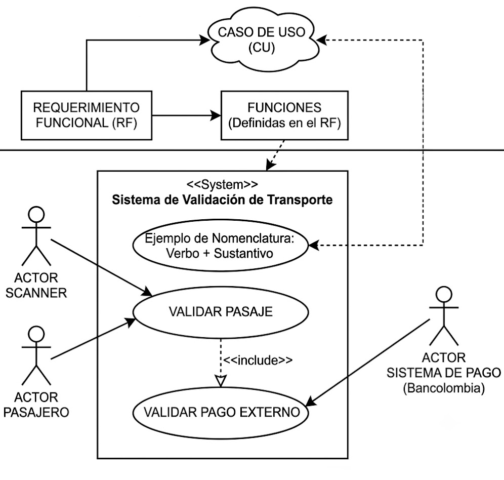

Imagen generada con Gemini - AIIntroducción: El mercado y los ingenieros de requisitos
El mercado en la tecnología ha ido cambiando. Con la llegada de la inteligencia artificial, el desarrollo de software ha evolucionado en sus procesos, especialmente en la escritura de código. Ahora, escribir código es más sencillo si se sabe lo que se necesita y se sabe cómo hacer un buen prompt (instrucción o pregunta que se le proporciona a un modelo de IA para que genere una respuesta).
El paradigma del cómo se aprendía a programar ha cambiado totalmente. Incluso se puede pensar en hechos como que depurar ya no existe en el sentido tradicional: en lugar de utilizar una herramienta de depuración, es preferible utilizar un modelo de lenguaje (LLM) para pedirle ayuda con problemas de sintaxis o lógica.
Por esta razón, está tomando más importancia el hecho de realizar una buena documentación: finita, delimitada y específica, en donde hay diferentes procesos que se describen detalladamente. Esto ha hecho que, en el mercado tecnológico, los ingenieros de requisitos hayan ganado más oportunidades laborales. El trabajo de un requirements engineer es uno de los más importantes en el ciclo de vida del software.
¿Qué hace un ingeniero de requisitos?
- Define y documenta los requisitos del sistema.
- Establece reglas de negocio y restricciones.
- Verifica que los modelos (casos de uso, diagramas de clases, DFD) cumplan con los requisitos establecidos.
- Actúa como puente entre el cliente y el equipo de desarrollo.
Reglas de negocio
2.1 Definición y propósito
Una regla de negocio es una declaración que define o restringe algún aspecto del funcionamiento de una organización o sistema. En el contexto del software, las reglas de negocio son lineamientos o restricciones que describen cómo deben comportarse los datos dentro del sistema para asegurar que las operaciones respeten la lógica y objetivos del negocio.
| Característica | Descripción |
|---|---|
| Claridad y Especificidad | Establecen condiciones o restricciones claras que deben cumplirse dentro del sistema. |
| Automatización | Son integradas en la estructura de la base de datos (a través de restricciones, validaciones y lógica de negocio) para garantizar su cumplimiento. |
| Integridad y Consistencia | Ayudan a mantener la integridad de los datos y evitar errores o inconsistencias. |
| Apoyo a Procesos | Definen cómo deben manejarse los datos en ciertas condiciones o situaciones específicas. |
2.2 Sintaxis para redacción de reglas de negocio
Estructura general:
[Entidad principal] + [Condición/Restricción] + [Acción/Resultado esperado]Ejemplo: Restricción de Cantidad
> "Cada Usuario puede tomar en préstamo un máximo de cinco Libros a la vez."
| Parte | Contenido |
|---|---|
| Entidad principal | Usuario |
| Condición/Restricción | puede tomar en préstamo un máximo de cinco libros |
| Acción/Resultado esperado | a la vez |
2.3 Estructura detallada para reglas de negocio
| Campo | Descripción |
|---|---|
| Nombre de la regla | Un título breve para identificar la regla. |
| Descripción | Explicación completa de la regla. |
| Condición de Aplicación | Condición que debe cumplirse. |
| Acción o Resultado | Efecto o acción que debe ocurrir si se cumple la condición. |
2.4 Ejemplos de reglas de negocio
| ID Regla | Regla de Negocio | Descripción | Propósito | Resultado Esperado |
|---|---|---|---|---|
| R1 | Un usuario no puede tener más de 5 préstamos activos. | Limita el número de libros que un usuario puede tomar. | Controlar el número de libros prestados. | Rechazo de préstamo si supera el límite. |
| R2 | Un libro solo puede ser reservado si está disponible. | Un libro no puede ser reservado si ya está prestado. | Evitar reservas duplicadas. | La reserva se confirma solo si el libro está disponible. |
| R3 | Cada préstamo tiene un plazo de devolución de 15 días. | Plazo máximo para devolver un libro. | Asegurar la rotación de libros. | El sistema calcula la fecha de devolución a 15 días. |
| R4 | Al devolver un Libro, el estado debe actualizarse a "disponible". | Actualización automática del estado del libro. | Mantener inventario actualizado. | Estado del libro cambia a "disponible". |
| R5 | Un usuario no puede realizar un nuevo préstamo si tiene 3 o más multas activas. | Bloqueo de préstamos por mora. | Controlar usuarios con deudas. | Rechazo de préstamo si tiene multas activas. |
2.5 Lista de chequeo para reglas de negocio
| Criterio | Descripción | Cumple (Sí/No) |
|---|---|---|
| Claridad y Especificidad | Cada regla está claramente definida, sin ambigüedades. | |
| Consistencia con el Caso de Estudio | Las reglas están alineadas con los objetivos y procesos descritos en el caso de estudio. | |
| Determinación de Relaciones | Se identifican correctamente las relaciones entre entidades (uno a uno, uno a muchos, muchos a muchos). | |
| Identificación de Restricciones | Todas las restricciones (como límites de cantidad o condiciones de acceso) están claramente indicadas. | |
| Reglas de Integridad de Datos | Cada regla asegura la integridad de los datos, evitando redundancias y valores inconsistentes. |
2.6 Actividad: Matriz de verificación
Para el proyecto formativo, se debe desarrollar una matriz de verificación de reglas de negocio. Esta matriz es un archivo en Excel que contiene todas las reglas de negocio del proyecto.
- Revisar los requerimientos funcionales del proyecto.
- Para cada requerimiento, identificar las restricciones y condiciones que debe cumplir.
- Redactar las reglas de negocio siguiendo la sintaxis propuesta.
- Verificar que cada regla tenga correspondencia en el modelo.
- Entregar la matriz en formato Excel.
Casos de uso
3.1 Conceptos fundamentales
¿Qué es un caso de uso? Es un modelo funcional que describe las interacciones entre los actores y el sistema para lograr un objetivo específico. Representa una unidad funcional del sistema desde el punto de vista del usuario.
¿Qué es un actor? Representa a cualquier entidad externa al sistema que interactúa con él. Pueden ser personas, otros sistemas o dispositivos.
| Tipo de Actor | Descripción |
|---|---|
| Primarios | Inician la interacción con el sistema. |
| Secundarios | Son invocados por el sistema. |
| Internos vs. Externos | Dependiendo de si pertenecen a la organización que desarrolla el sistema o no. |
3.2 Relaciones entre elementos
| Relación | Descripción |
|---|---|
| Actor – Caso de uso | Asociación (línea recta). |
| Entre actores | Generalización (herencia). |
| Include | Una funcionalidad común que siempre se ejecuta (obligatoria). |
| Extend | Un comportamiento opcional o condicional. |
| Generalización | Un caso de uso puede especializar a otro. |
3.3 Notación UML
| Elemento | Notación |
|---|---|
| Caso de uso | Óvalo |
| Actor | Stickman (monigote) |
| Asociación | Línea continua |
| Generalización | Línea con triángulo |
| Include | Línea punteada con estereotipo «include» |
| Extend | Línea punteada con estereotipo «extend» |
3.5 Documentación de casos de uso
A continuación se muestra un ejemplo de la estructura de documentación de un caso de uso:
| Código: | CU_lns_001 |
| Nombre: | Registrar préstamo de libro |
| Actores: | Bibliotecario |
| Descripción: | El bibliotecario registra el préstamo de uno o varios libros a un usuario previamente registrado y habilitado. El sistema verifica disponibilidad, aplica reglas de préstamo, y genera los datos correspondientes. |
| Requerimientos asociados: | RF-01: Registrar préstamo RF-02: Verificar disponibilidad RF-03: Calcular fecha de devolución |
| Reglas de negocio aplicables: | RN-01: Límite de libros por usuario RN-02: Bloqueo por mora RN-03: Verificación de disponibilidad RN-04: Límite de 15 días |
| Precondiciones: | El bibliotecario debe estar autenticado en el sistema. El usuario debe estar registrado y activo. |
| Flujo principal: |
1. El bibliotecario inicia sesión en el sistema. 2. Selecciona la opción "Registrar préstamo". 3. Ingresa el ID del usuario. 4. El sistema valida que el usuario esté activo y sin moras (RN-02). 5. El bibliotecario ingresa o escanea los códigos de los libros a prestar. 6. El sistema verifica que los libros estén disponibles (RF-02, RN-03). 7. El sistema valida que el usuario no supere el máximo de préstamos permitidos (RN-01). 8. El sistema calcula la fecha estimada de devolución (RF-03, RN-04). 9. El bibliotecario confirma y el sistema registra el préstamo. 10. El sistema actualiza el estado de los libros a "prestado" y emite un comprobante. |
| Flujos alternos: |
4a. Usuario con mora: El sistema informa al bibliotecario y no permite continuar. 6a. Libro no disponible: El sistema lo indica y no lo agrega al préstamo. 7a. Usuario con 3 libros prestados: El sistema impide registrar más préstamos. |
| Postcondiciones: |
El préstamo queda registrado. El libro cambia a estado "prestado". El sistema actualiza el historial del usuario. |
Diagramas de clases
4.1 Conceptos fundamentales
| Concepto | Definición |
|---|---|
| Clase | Plantilla que define los atributos y métodos comunes a un conjunto de objetos. |
| Atributo | Característica o propiedad de una clase. |
| Método | Comportamiento o función que puede realizar una clase. |
| Clase abstracta | Clase que no puede ser instanciada directamente; sirve como base para otras clases. |
| Interfaz | Contrato que define un conjunto de métodos que una clase debe implementar. |
| Abstracción | Proceso de simplificar una realidad compleja modelando solo los aspectos relevantes. |
| Encapsulamiento | Ocultar los detalles internos de una clase y exponer solo lo necesario. |
| Herencia | Mecanismo por el cual una clase (subclase) adquiere los atributos y métodos de otra (superclase). |
| Polimorfismo | Capacidad de un objeto de tomar muchas formas; mismo nombre de método, comportamiento diferente. |
| Composición | Relación fuerte donde una clase contiene a otra y su ciclo de vida depende de ella. |
| Agregación | Relación débil donde una clase contiene a otra pero su ciclo de vida es independiente. |
4.3 Proceso guiado para extraer clases
Paso 2: Extraer clases candidatas (Clasificar cada término)
| Tipo | Criterio |
|---|---|
| Clase | Tiene identidad/ciclo de vida. |
| Atributo | Describe a otra clase (sin identidad propia). |
| Rol/Asociación | Expresa relación (ej. "anfitrión publica propiedad"). |
Paso 3: Depurar y clasificar (Estereotipar cada clase)
| Estereotipo | Descripción |
|---|---|
| Entity | Concepto con identidad (p.ej., Reserva). |
| Value Object | Valor inmutable, sin identidad (p.ej., Money, Dirección). |
| Control/Service | Orquesta un caso de uso o lógica de aplicación (p.ej., GestorReservas). |
| Boundary | Interfaz con actores (opcional en análisis). |
Relación con la consistencia de modelos
La verificación de modelos está directamente relacionada con la consistencia entre modelos. Los diferentes artefactos de un proyecto de software deben ser consistentes entre sí.
| Artefacto | Verificación |
|---|---|
| Reglas de negocio | Deben ser coherentes con los requerimientos funcionales y el modelo de datos. |
| Casos de uso | Deben cubrir todos los requerimientos funcionales. |
| Diagrama de clases | Debe implementar las entidades identificadas en las reglas de negocio. |
| Consistencia intermodelos | Los nombres y conceptos deben ser consistentes entre diagramas. |
Ejemplo de verificación
| Regla de negocio | Caso de uso asociado | Clase asociada |
|---|---|---|
| RN-01: Límite de 5 libros por usuario | Registrar préstamo de libro | Usuario, Prestamo |
| RN-03: Verificación de disponibilidad | Registrar préstamo de libro | Libro |
| RN-04: Plazo de 15 días | Registrar préstamo de libro | Prestamo |